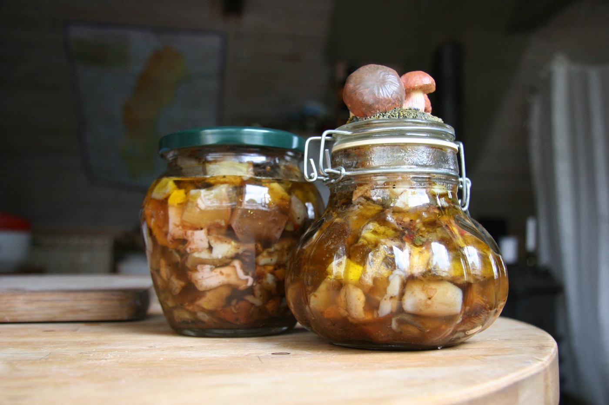

Чем заменить фон баннеров
Нынешние кадры — общая природа: они подошли бы любому грибному сайту и ничего не говорят про заготовку. Плюс светлая трава заставляет затемнять фото почти до черноты, чтобы читался текст.
Что не так с текущими тремя
- Корзина в траве: светлый кадр, текст приходится закрывать плотной вуалью, и фото почти не видно.
- Сморчок крупным планом: на ширину баннера читается как земля, продукт не узнаётся.
- Сборщики против света: силуэты далеко, непонятно, что происходит.
- Ни на одном нет дела: приёмки, весов, ящиков с ценниками, сушки, бочек, погрузки.
0Как сейчас
Фото на всю ширину, поверх плотное затемнение. Для сравнения.

Доставка по Москве бесплатно от 300 кг
Грибы и ягоды с Урала, прямо от заготовителя
Собираем, сушим, солим и морозим сами. Без перекупов и без «уточню у поставщика».
- 9партий открыто
- от 420 ₽входная цена за кг
- 1-2 днядо отгрузки
1Другой сюжет, тот же приём
Меняем только кадр: ящики с рукописными ценниками на приёмке. Единственное фото в проекте, где видно дело. Тёмный сам по себе, вуаль почти не нужна.

Доставка по Москве бесплатно от 300 кг
Грибы и ягоды с Урала, прямо от заготовителя
Собираем, сушим, солим и морозим сами. Без перекупов и без «уточню у поставщика».
- 9партий открыто
- от 420 ₽входная цена за кг
- 1-2 днядо отгрузки
2Фото карточкой сбоку
Текст на зелёном градиенте, фото отдельным кадром справа. Текст всегда читается, фото видно целиком и не нужно душить вуалью. Самый практичный вариант: подойдёт любой снимок, даже светлый.
Доставка по Москве бесплатно от 300 кг
Грибы и ягоды с Урала, прямо от заготовителя
Собираем, сушим, солим и морозим сами. Без перекупов и без «уточню у поставщика».
- 9партий открыто
- от 420 ₽входная цена за кг
- 1-2 днядо отгрузки

3Без фото совсем
Только цвет, лёгкая фактура и типографика. Читается как заявление, а не как открытка. Ничего не устаревает и не зависит от качества съёмки. Фото при этом остаются ниже, в карточках партий.
Доставка по Москве бесплатно от 300 кг
Грибы и ягоды с Урала, прямо от заготовителя
Собираем, сушим, солим и морозим сами. Без перекупов и без «уточню у поставщика».
- 9партий открыто
- от 420 ₽входная цена за кг
- 1-2 днядо отгрузки
4Коллаж из четырёх кадров
Сразу показывает ассортимент и переработку: свежее, сушёное, солёное, приёмка. Ни один кадр не обязан быть идеальным, работает набор. Хорошо, когда есть много средних фото и нет одного отличного.
Доставка по Москве бесплатно от 300 кг
Грибы и ягоды с Урала, прямо от заготовителя
Собираем, сушим, солим и морозим сами. Без перекупов и без «уточню у поставщика».
- 9партий открыто
- от 420 ₽входная цена за кг
- 1-2 днядо отгрузки


Если снимать своё, то что
- Приёмка: ящики, весы, рукописные ценники, руки приёмщика. Это ваш главный кадр.
- Сушилка: решёта с грибом, тёплый свет, пар. Показывает переработку, а не только лес.
- Бочки на засолке: масштаб и серьёзность производства.
- Погрузка: коробки в машину, паллеты. Говорит оптовику, что объём реальный.
- Продукт по отдельности на однотонном фоне: для карточек партий, а не для баннера.
Скажите номер. Второй и третий можно применить хоть сейчас, они не зависят от новых фото. Первый и четвёртый работают на том, что уже есть.